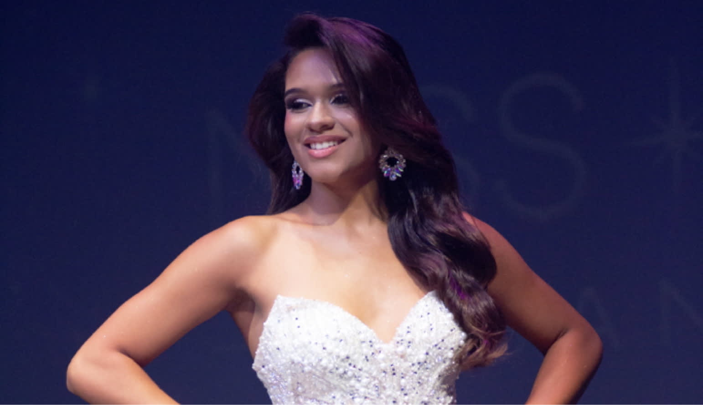
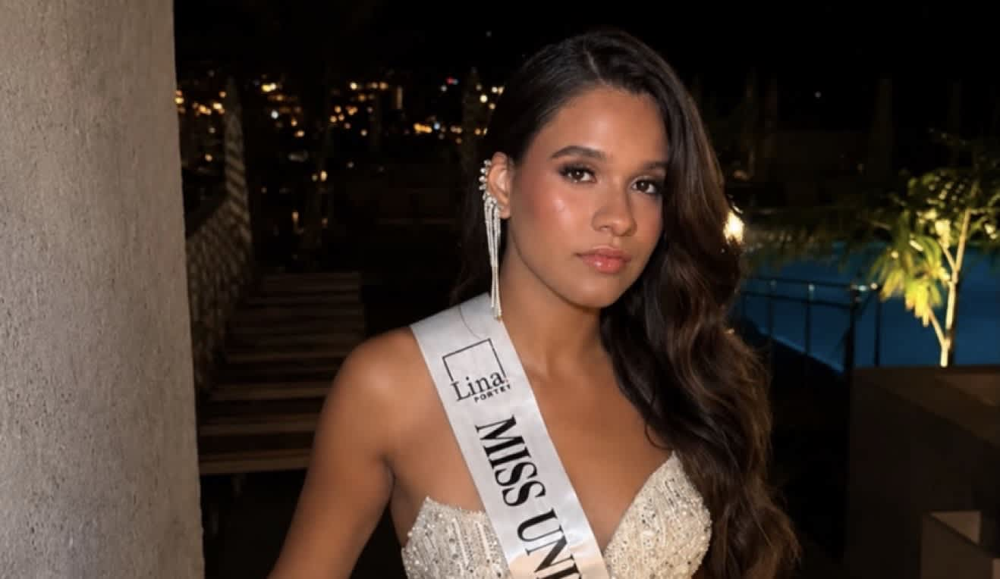
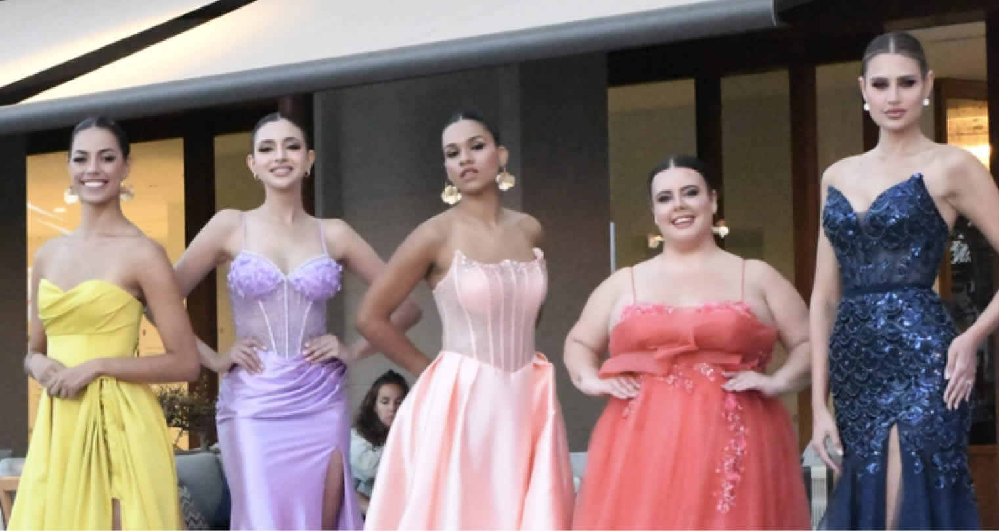
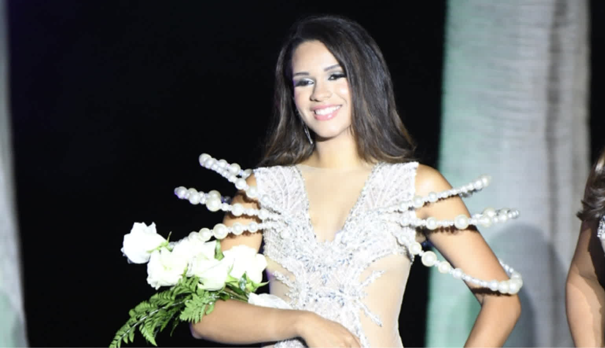

UNIVERSE
SANTA CRUZ
UNIVERSE
SANTA CRUZ
La primera edición de Miss Universe Santa Cruz abrió caminos que continuaron mucho más allá de la gala. Ivanna Parra fue una de las participantes que encontró una nueva oportunidad tras su paso por el certamen. Después de formar parte de la edición celebrada en Arafo, fue designada Miss Universe País Vasco 2026 y continuó su trayectoria rumbo al escenario nacional.
Su nueva representación le permitió afrontar una etapa diferente dentro de Miss Universe, incorporándose a un proyecto nacional en el que pudo seguir desarrollando su experiencia, su preparación y su presencia dentro del certamen.

Una primera experiencia en Santa Cruz
Ivanna Parra formó parte de las trece candidatas que dieron vida a la primera edición de Miss Universe Santa Cruz. Su participación comenzó dentro de un proyecto completamente nuevo, compartiendo escenario y proceso de preparación con mujeres procedentes de diferentes puntos de las islas.
La experiencia supuso su primer contacto con una edición que combinó pasarela, comunicación, preparación y diferentes fases sobre el escenario. Más allá del resultado final, su participación terminaría convirtiéndose en el comienzo de una nueva etapa.
De candidata a Miss Universe País Vasco
Tras la celebración de Miss Universe Santa Cruz 2026, el recorrido de Ivanna dentro del certamen continuó con su designación como Miss Universe País Vasco 2026.
La nueva representación le abrió la posibilidad de continuar hacia Miss Universe Spain, transformando su participación en Santa Cruz en el punto de partida de una experiencia de mayor alcance.

“Su paso por Miss Universe Santa Cruz se convirtió en el comienzo de una nueva etapa como representante del País Vasco.”
Una nueva etapa rumbo a Miss Universe Spain
Como Miss Universe País Vasco 2026, Ivanna se incorporó posteriormente a la experiencia nacional de Miss Universe Spain 2026, celebrada en Tenerife.
Durante la concentración compartió jornadas de preparación, ensayos, sesiones fotográficas, actividades oficiales y diferentes compromisos junto al resto de representantes autonómicas. La experiencia nacional le permitió continuar desarrollándose en un contexto diferente y representar al País Vasco dentro del escenario nacional.

Tres representantes nacidas de una misma edición
La presencia de Ivanna en Miss Universe Spain se produjo junto a otras dos mujeres directamente vinculadas a la primera edición de Miss Universe Santa Cruz: Daniela Martínez Morales, representante de Santa Cruz de Tenerife, y Danna Hernández Cruz, representante de Galicia.
De esta forma, una única primera edición provincial terminó teniendo presencia en el certamen nacional a través de tres representaciones diferentes. Este resultado reforzó uno de los objetivos con los que nació Miss Universe Santa Cruz: que la experiencia de las participantes pueda generar nuevas oportunidades y no termine necesariamente cuando finaliza la gala.
Su experiencia en el escenario nacional
La participación en Miss Universe Spain permitió a Ivanna vivir desde dentro una concentración nacional, compartir espacio con candidatas procedentes de diferentes comunidades y afrontar las exigencias propias de una competición de estas características.
Desde los ensayos hasta la gala final, cada jornada formó parte de una experiencia que amplió el recorrido iniciado semanas antes en Santa Cruz.

Más allá de una única gala
La historia de Ivanna refleja una de las ideas que la organización quiere construir alrededor de Miss Universe Santa Cruz: una candidatura puede ser el comienzo de un recorrido y no únicamente una participación puntual.
Su designación como Miss Universe País Vasco permitió que su experiencia continuara después de la primera edición y que pudiera representar una nueva comunidad dentro del escenario nacional.
Una historia que continúa
La primera edición de Miss Universe Santa Cruz reunió trece historias diferentes. La de Ivanna Parra encontró continuidad con su designación como Miss Universe País Vasco 2026 y con una nueva experiencia dentro de Miss Universe Spain.
Su recorrido se suma así al de otras participantes de aquella primera edición que continuaron abriendo nuevas etapas después de abandonar el escenario de Arafo.